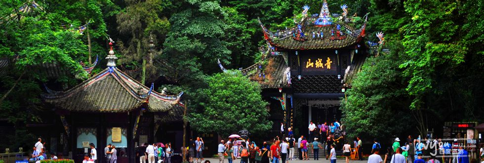
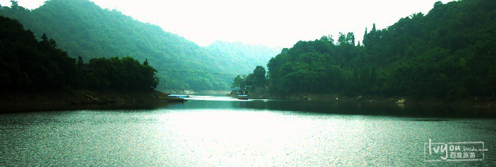
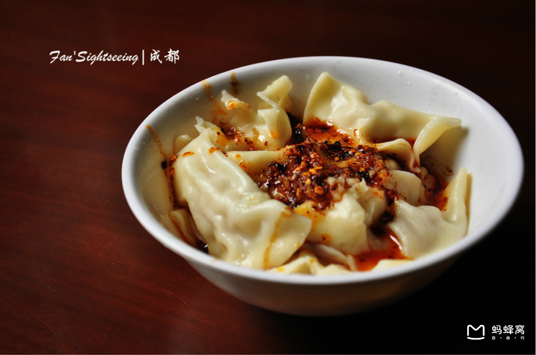
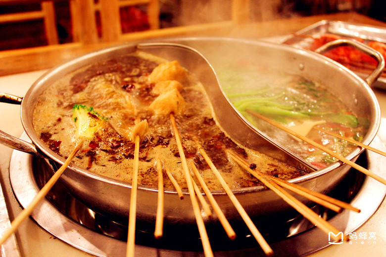
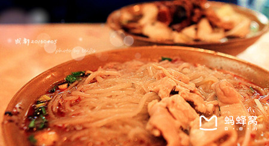
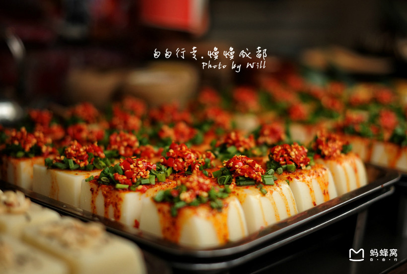
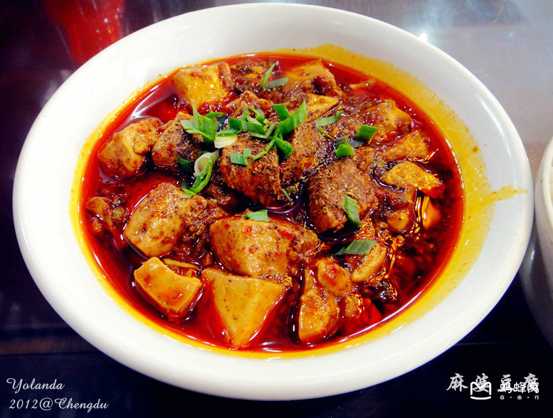
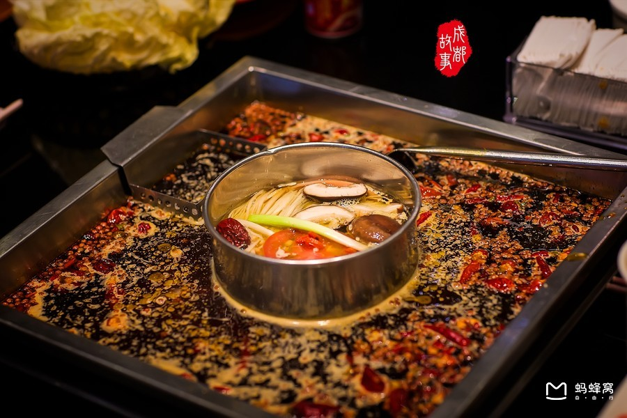

简介
成都，简称蓉，四川省省会、副省级市，中国西南地区的科技、商贸、金融中心和交通枢纽 ，国家重要的高新技术产业基地、商贸物流中心和综合交通枢纽、西部地区重要的中心城市 。
成都位于四川盆地西部，成都平原腹地，境内地势平坦、河网纵横、物产丰富、农业发达，自古就有“天府之国”的美誉。成都下辖11个市辖区、4个县，代管5个县级市。截至2016年末，成都总面积14312平方千米，常住人口1591.8万人；市辖区建成区面积837.3平方公里，全市城镇化率达70.6% 。
成都是中国五大战区之一的西部战区司令部驻地 ，是西部地区设立外国领事馆数量、开通国际航线数量最多的城市 ，是联合国教科文组织命名的世界美食之都
成都是国家历史文化名城、中国最佳旅游城市和南方丝绸之路的起点、“十大古都”之一 ，约在公元前5世纪筑城，西汉时已成为中国六大都市之一，三国时期为蜀汉国都。北宋年间成都人联合发行世界最早的纸币交子，官府在成都设立世界最早的管理储蓄银行交子务。2600多年的建城史孕育了都江堰、武侯祠、杜甫草堂、金沙遗址等众多名胜古迹。
风景


美食






版权所有 网络171周津平04